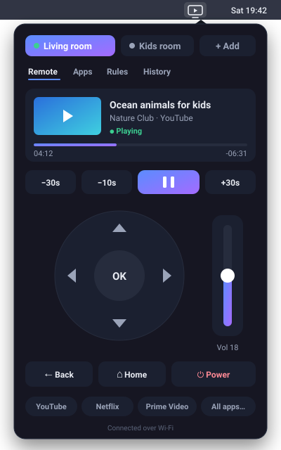
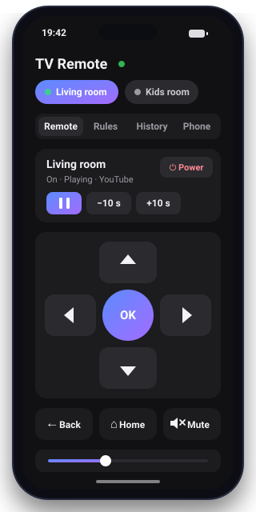

Your TVs, from your computer.
With rules that kids can't skip.
TV Remote controls the TVs in your home over Wi-Fi. Use it as a remote, open any app, search and play YouTube, use your phone as the remote, and set parental rules. It filters YouTube, limits screen time, sets a bedtime and keeps a watch history.
A full remote, on your desktop
Pair once and the TV is one click away. Everything goes over your home Wi-Fi.
Try it: use the D-pad, the volume slider or an app button and watch the TV.

Find and pair TVs
Finds TVs on your network automatically, even where mDNS doesn't work, by scanning the local network. You can also type an IP address. To pair, you enter the code the TV shows.
Several TVs
Add as many TVs as you like and switch between them. Each TV shows whether it is online, on or off, and its rules are set separately.
Power and wake
Turn a TV off, or wake it with Wake-on-LAN. If a TV drops off the network, the app notices instead of showing its last known state.
D-pad, Back and Home
Arrow keys, OK, Back and Home, just like the remote that came with the TV.
Volume
Volume up and down, mute, and a vertical slider that shows the TV's current level.
Now playing
Shows what is playing and whether it is playing, paused or buffering. You can play or pause, see the time played and left, and skip 10 or 30 seconds.
Open any installed app
One-tap shortcuts for YouTube, Netflix, Prime Video, Hotstar, SonyLIV and ZEE5. You can also browse and filter every app installed on the TV, with names and icons, and open any of them.
Search and type
Search the app that's open on the TV and type into it from your keyboard. In YouTube, results show with thumbnails on your computer, and a click plays the video on the TV.
Mac appShow my camera
Show your Mac's camera and microphone live on the TV, a few seconds behind, with a preview on the Mac.
Mac appPlay from this Mac
Pick a video or some photos on your Mac and show them on the TV. Videos the TV can't play directly are converted on the fly, and photos play as a slideshow.
Mac appUse your phone as the remote
Any phone on the same Wi-Fi can control the TVs from its browser. No app to install. The computer running TV Remote has to stay on.
Watch it: the phone enters the PIN once, then it becomes the remote.

Switch it on, then open the link
Phone access is off until you turn it on (Mac: Phone remote…, Windows: the Phone tab). The app then shows a web address to open on the phone. On Mac there is also a QR code to scan.
Protected by a PIN
The phone asks for a 6-digit PIN once, then stays signed in. After 5 wrong tries it is locked out for 5 minutes. New PIN signs out every phone.
Made for thumbs
Big buttons for remote, rules and history on a phone screen. You can add it to the home screen like an app.
Stays at home
Only devices on your home network can reach it. The PIN settings and playing files from the computer only work on the computer itself.
Rules that run on their own
Each TV has its own rules. The app keeps watching the TV and steps in when a rule applies, even when nobody is at the computer.
Try it: switch Kid filter or Block YouTube Shorts on and off, or drag the screen-time bar.
Kid filter
Checks YouTube video titles for violent, scary and other unsuitable words. When a flagged video starts, it goes back within YouTube, so the child doesn't lose their place in the app.
Adult content filter
Steps in when a title or channel looks adult, in any app.
Allowed YouTube channels
Allow only the channels you list. Anything from another channel is sent away. A part of the channel name is enough.
Restricted YouTube channels
Block the channels you list and allow everything else.
Block YouTube Shorts
Watches the TV screen and leaves Shorts as soon as one appears. This needs network debugging turned on in the TV's settings.
Daily screen time
Set a daily limit, from 15 minutes to 8 hours. The TV turns off when the limit is used up. Time spent on the screensaver doesn't count.
Bedtime
Keeps the TV off between the times you choose, for example 21:00 to 07:00.
Volume cap
Turns the volume back down if it goes above the maximum you set.
Parent mode
Turns off all rules and recording on a TV for a set time or until you stop it. It can also switch on every day in a fixed window, and you can add 30 minutes or end it early.
Alerts
Get a Mac notification whenever a rule steps in. There is also a test alert, and the app can start at login.
Mac appKnow what was watched, and what was blocked
Recording is on by default. You can switch it off for each TV, and nothing is recorded during parent mode.
Try it: show blocked videos only, then press Allow.
Sessions
Every video with its app, channel, start and end time and how long it was watched. You can see what is playing live.
Today at a glance
Play time and TV-on time for today, and the most-watched channels. Play time counts only while a video is actually playing.
Weekly report
Seven days of play time per day, the daily average, and the top apps and channels.
Mac appBlocked videos
Blocked videos show in the history with the rule that stopped them. A "Blocked only" filter shows just those.
Allow a video
Think a rule got it wrong? Press Allow and the video plays next time. Press Undo to block it again.
Open in the browser
Open any video from the history in your browser to check it yourself.
Export and clear
Export the history as a CSV spreadsheet, for one TV or (on Mac) for all of them, or clear a TV's history.
Two apps, one engine
On Mac, TV Remote lives in the menu bar. On Windows, it opens in its own window. Both use the same background helper, so the rules and history work the same way.
| Feature | Mac | Windows |
|---|---|---|
| Find, pair and control several TVs | Yes | Yes |
| Open any installed app | Yes | Yes |
| Phone remote with PIN (QR code on Mac) | Yes | Yes |
| All parental rules and parent mode | Yes | Yes |
| Watch history, blocked videos, Allow, CSV export | Yes | Yes |
| Search and type on the TV | Yes | No |
| Weekly report | Yes | No |
| Camera to TV, play files from the computer | Yes | No |
| Notifications and start at login | Yes | No |
Each update to the main branch builds a new Mac disk image and Windows installer automatically and publishes them on the Releases page.
Up and running in a minute
Install
Download the .dmg (Mac) or Setup.exe (Windows) from the latest release.
Add a TV
Make sure the TV and the computer are on the same Wi-Fi. Choose Add a TV, pick your TV from the list, and enter the code it shows.
Set your rules
Open the Rules tab, switch on the rules you want for each TV, and check the History tab now and then.
Works with TVs that run Android TV or Google TV. To block YouTube Shorts, also turn on network debugging in the TV's developer options.